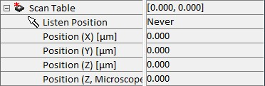

|
扫描台
|
扫描台参数组用于控制压电台的位置。

位置(X/Y/Z)[µm]
显示扫描台的 X 位置，可以增加或减少到扫描台的限位。如果输入超出范围的值，扫描台将移动到其最大位置，该位置也将显示为参数值。
位置(Z，显微镜)[µm]
此功能与 移动到 Z 位置 按钮在 视频控制窗口中的功能相同。
监听 位置
监听位置参数允许使用任何具有位置信息的图谱或图像选择用于扫描台和/或显微镜 Z 台定位的坐标。X 和 Y 坐标可以使用在 X-Y 平面采集的任何图像（如 2D 扫描、视频图像或位图）以及横截面或线扫描的图谱来选择。Z 轴例如可以通过单击深度扫描来更改。
移动模式
使用此下拉菜单，可以通过以下选项控制 Z 轴的行为：
Z 轴用于反馈
此模式通常用于 SNOM 或 AFM 测量。此处扫描台的 Z 轴通过 PI 控制器使用反馈信号作为参考来控制。如果选择此模式，则无法手动更改扫描台 Z 轴的位置。
Z 轴由显微镜控制
这是执行共聚焦或共聚焦拉曼测量时的典型操作模式，其中显微镜 Z 台用作内部坐标系的 Z 轴。这允许深度扫描大于压电 Z 范围。
Z 轴由扫描台控制
此处扫描台的 Z 轴是内部坐标系的 Z 轴。此外，仅使用扫描台的 Z 轴允许在压电 Z 范围内进行深度扫描。
无 Z 运动
如果在测量过程中不能进行 Z 运动，则选择此选项。